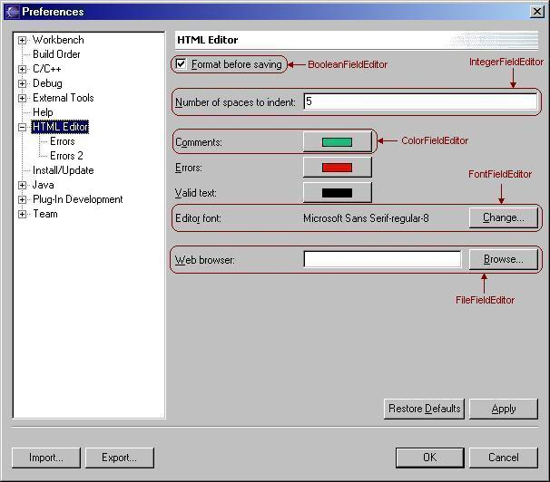
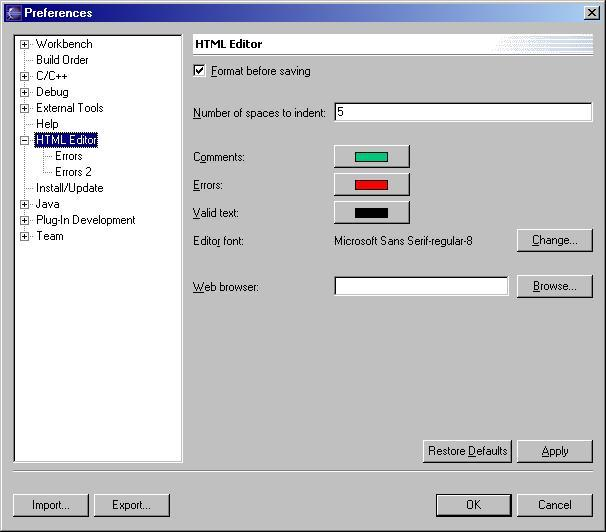
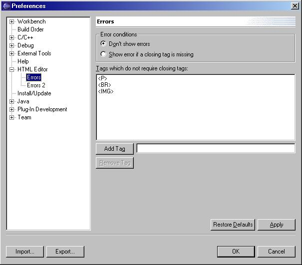

| Eclipse Corner Article |

Summary
Even though preference pages can be simple to program, you can spend a lot of time getting them "just right." Field editors make this task faster and easier by providing the behavior for storing, loading, and validating preferences. Field editors also define some of the behavior for grouping and laying out widgets on a preference page.By Ryan Cooper, OTI
August 21, 2002
This article applies to Eclipse 2.0. The contents may not be valid for other versions of Eclipse. Bug 138906 has been opened to discuss this article.
A field editor is an object that presents the user with the value of a preference from a preference store. It implements the loading, storing, and validating of its associated value. Instances of FieldEditor are most often used in conjunction with a FieldEditorPreferencePage, which provides automatic validation handling and displays messages received from its field editors. We will discuss when field editors are most (and least) effective and briefly describe the available types of field editors. We will then explain how to use them in both a FieldEditorPreferencePage and a regular PreferencePage using two example pages containing some of the most commonly used field editor types. We will finish up with a discussion about writing your own field editors. This article will assume some knowledge of preference pages and preference stores. If you aren't familiar with the way they work, check out Tod Creasey's article Preferences in the Eclipse Workbench UI before continuing with this article.
Most of the field editor types supplied by JFace were created to handle simple preference types. For example, there are no field editors to handle tree selections. Therefore, the simpler your preference page, the more useful field editors will be to you. If your page uses only simple widgets such as buttons, check boxes, and text fields, it's probably a good idea to use a FieldEditorPreferencePage. Doing so will prevent you from having to write any code to store, retrieve, or validate values.
If your preference page contains one or more complex widgets such as a List or Tree, a regular preference page can be a better solution. Even so, you can use field editors for any simple preferences on the page. In this case, you can call the appropriate methods of FieldEditor to store, retrieve, and validate values, instead of writing SWT level code yourself. Another option (discussed in the Writing your own field editors section) is to write any new field editors that you will need.
Although FieldEditorPreferencePage is very convenient for creating preference pages with simple layouts, it does not allow you the control over the layout that a regular PreferencePage does. If you want to fine-tune the layout of a preference page, you should use a regular PreferencePage instead of a FieldEditorPreferencePage.
Sometimes field editors do not provide the access to widgets that you need. For example, you may need to set a selection listener on a widget contained in a field editor. However, the field editor may not provide access to its widget. In cases such as this one, it may be simpler not to use a field editor. As a rule of thumb, use field editors whenever possible, but only use a FieldEditorPreferencePage if all of the preference types on a page are supported by field editors or you are willing to write new field editors to support them. FieldEditorPreferencePage assumes that all preferences on the page are represented in field editors. Any preference not represented by a FieldEditor will be ignored by many of the methods of FieldEditorPreferencePage. For example, the value of such a preference will not be saved in the preference store when performOk() is called.
JFace provides nine concrete subclasses of FieldEditor. Each corresponds to a common widget grouping used to present a preference. To illustrate some of these field editors, a screenshot of a preference page for an imaginary HTML editor has been included. The available concrete field editors are:

Different types of field editors
This section will describe two example preference pages which make use of field editors. The two pages store the preferences for a simple HTML editor. The editor has the ability to auto-format HTML (indenting nested tags a number of spaces specified on the preference page), display text in different colors based on context, open a web browser for visually checking HTML files, and perform some minimal error checking. The preference pages for the editor allow the user to configure the preferences for these features.
The main preference page for the HTML editor is a subclass of FieldEditorPreferencePage, since all of the preferences on the page are of types supported by field editors.
class HTMLPreferencePage
extends FieldEditorPreferencePage
implements IWorkbenchPreferencePage {
// ...
}
A subclass of FieldEditorPreferencePage only requires a few methods to be implemented. Subclasses must instantiate and set a preference store for the preference page, as shown below:
public HTMLPreferencePage() {
 super(FieldEditorPreferencePage.GRID);
// Set the preference store for the preference page.
IPreferenceStore store =
HTMLEditorPlugin.getDefault().getPreferenceStore();
setPreferenceStore(store);
}
super(FieldEditorPreferencePage.GRID);
// Set the preference store for the preference page.
IPreferenceStore store =
HTMLEditorPlugin.getDefault().getPreferenceStore();
setPreferenceStore(store);
}
The constructors for FieldEditorPreferencePage each take as an argument an int representing the layout style of the
page. In the above constructor, we use the constant
FieldEditorPreferencePage.GRID (see  ). This constant indicates
that the controls of the field editors will be placed into a single grid
layout. The alternative constant is FieldEditorPreferencePage.FLAT, which indicates that each field editor is handled
separately. GRID generally results in more visually appealing preference pages, so it is
the layout style constant you should usually use.
). This constant indicates
that the controls of the field editors will be placed into a single grid
layout. The alternative constant is FieldEditorPreferencePage.FLAT, which indicates that each field editor is handled
separately. GRID generally results in more visually appealing preference pages, so it is
the layout style constant you should usually use.

The HTML Editor Preference Page
Subclasses must also implement FieldEditorPreferencePage.createFieldEditors(). In this method, we instantiate all of the field editors on the page, and then add them to the page by calling FieldEditorPreferencePage.addField(FieldEditor). If field editors are instantiated but not added to the preference page, their values will not be saved in the preference store, and will therefore have no effect. The following is the createFieldEditors() method from our HTMLPreferencePage:
protected void createFieldEditors() {
// Initialize all field editors.
BooleanFieldEditor formatOnSave = new BooleanFieldEditor(
IPreferenceConstants.FORMAT_PREFERENCE,
"&Format before saving",
getFieldEditorParent());
addField(formatOnSave);
SpacerFieldEditor spacer1 = new SpacerFieldEditor(
getFieldEditorParent());
addField(spacer1);
IntegerFieldEditor indentSpaces = new IntegerFieldEditor(
IPreferenceConstants.INDENT_PREFERENCE,
"&Number of spaces to indent:",
getFieldEditorParent());
indentSpaces.setValidRange(0, 10);
addField(indentSpaces);
SpacerFieldEditor spacer2 = new SpacerFieldEditor(
getFieldEditorParent());
addField(spacer2);
ColorFieldEditor commentColor = new ColorFieldEditor(
IPreferenceConstants.COMMENT_COLOR_PREFERENCE,
"C&omments:",
getFieldEditorParent());
addField(commentColor);
ColorFieldEditor errorColor = new ColorFieldEditor(
IPreferenceConstants.ERROR_COLOR_PREFERENCE,
"&Errors:",
getFieldEditorParent());
addField(errorColor);
ColorFieldEditor validColor = new ColorFieldEditor(
IPreferenceConstants.VALID_COLOR_PREFERENCE,
"&Valid text:",
getFieldEditorParent());
addField(validColor);
FontFieldEditor font = new FontFieldEditor(
IPreferenceConstants.FONT_PREFERENCE,
"Edito&r font:",
getFieldEditorParent());
addField(font);
SpacerFieldEditor spacer3 = new SpacerFieldEditor(
getFieldEditorParent());
addField(spacer3);
FileFieldEditor webBrowser = new FileFieldEditor(
IPreferenceConstants.BROWSER_PREFERENCE,
"&Web browser:",
true,
getFieldEditorParent());
addField(webBrowser);
}
In the above code (see  ), a separate call is made to
getFieldEditorParent() for each field editor. Your first instinct may be to cache this
method's return value in a local variable, and replace all the method calls with references to that variable. However, it is important
not to do so. According to the method's documentation, a new parent may be created each time the method is called. Caching the value
disobey's the method's contract.
), a separate call is made to
getFieldEditorParent() for each field editor. Your first instinct may be to cache this
method's return value in a local variable, and replace all the method calls with references to that variable. However, it is important
not to do so. According to the method's documentation, a new parent may be created each time the method is called. Caching the value
disobey's the method's contract.
You may have noticed the use of SpacerFieldEditor in the above code. This is a new FieldEditor subclass implemented in the example. It is included in the zip file referred to in the Conclusion section. It is used to add space to a preference page to make it look less cluttered. Unfortunately, JFace does not provide the ability to add space to a FieldEditorPreferencePage. This is a known deficiency in the JFace framework. Different developers have attempted several workarounds, but none have been entirely satisfactory.
Since a SpacerFieldEditor doesn't represent a preference, you might not think it's necessary to add it to the page after instantiating it. Since FieldEditorPreferencePage also controls the layout of the page, the page layout may become jumbled if there are any field editors that aren't added. Always call addField(FieldEditor) for each field editor on a FieldEditorPreferencePage.
The HTML editor has a secondary preference page for controlling its error detecting facilities. There are currently two options: "Don't show errors" and "Show error if a closing tag is missing." We would like this to be an easily expandable preference, so we will use a radio button group instead of a checkbox. RadioGroupFieldEditor is suited for this preference. However, the page also contains a list (a list of HTML tags for which a closing tag is not required), for which there is no suitable field editor, so we will subclass PreferencePage rather than FieldEditorPreferencePage.
class ErrorPreferencePage
extends PreferencePage
implements IWorkbenchPreferencePage {
// ...
}

The Errors Preference Page
You must write a little more code to manage your field editors when not using a FieldEditorPreferencePage. In addition to creating the preference store and instantiating field editors, you must write code to load preferences, store preferences, and restore defaults. Without a FieldEditorPreferencePage, you can still take advantage of a field editor's self-validation via the FieldEditor.isValid() method, but you must write the code that calls this method.
When using field editors with a regular preference page, you should instantiate them in the createContents(Composite) method, just like you would instantiate other items in the page layout. For example, here is ErrorsPreferencePage.createContents(Composite):
protected Control createContents(Composite parent) {
Composite top = new Composite(parent, SWT.LEFT);
// Sets the layout data for the top composite's
// place in its parent's layout.
top.setLayoutData(new GridData(GridData.FILL_HORIZONTAL));
// Sets the layout for the top composite's
// children to populate.
top.setLayout(new GridLayout());
errors = new RadioGroupFieldEditor(
IPreferenceConstants.ERRORS_PREFERENCE,
"Error conditions",
1,
new String[][] {
{"Don't show errors",
IPreferenceConstants.NO_ERRORS
},
{"Show error if a closing tag is missing",
IPreferenceConstants.ERROR_FOR_MISSING_CLOSING_TAG
}
},
top,
true);
errors.setPreferencePage(this);
 errors.setPreferenceStore(getPreferenceStore());
errors.setPreferenceStore(getPreferenceStore());
 errors.load();
Label listLabel = new Label(top, SWT.NONE);
listLabel.setText("Tags which do not require closing tags:");
exemptTagsList = new List(top, SWT.BORDER);
exemptTagsList.setItems(
HTMLEditorPlugin.getDefault().getExemptTagsPreference());
// ...
// The remainder of the code has been omitted for brevity.
// Download the zip file that accompanies this article
// for the complete code.
// ...
return top;
}
errors.load();
Label listLabel = new Label(top, SWT.NONE);
listLabel.setText("Tags which do not require closing tags:");
exemptTagsList = new List(top, SWT.BORDER);
exemptTagsList.setItems(
HTMLEditorPlugin.getDefault().getExemptTagsPreference());
// ...
// The remainder of the code has been omitted for brevity.
// Download the zip file that accompanies this article
// for the complete code.
// ...
return top;
}
There are a few extra lines of code that must be included when using a field editor with a regular preference page instead of a
FieldEditorPreferencePage. After instantiating the field editor, you must ensure that the field editor
knows its preference page and preference store (see  and
and  ). Otherwise, you can not take advantage of the field
editor's built-in methods for storing and loading the preference. You must also load the preference (see
). Otherwise, you can not take advantage of the field
editor's built-in methods for storing and loading the preference. You must also load the preference (see
 ) so the current value will be displayed when the page is opened.
) so the current value will be displayed when the page is opened.
Much of the createContents() method has been omitted from this example because it is quite long. The rest of the method lays out the list, buttons, and text field on the page. Using FieldEditors and FieldEditorPreferencePage whenever possible makes your preference page code cleaner and much shorter. If you would like to compare the complete implementations of HTMLEditorPreferencePage and ErrorsPreferencePage, please download the zip file referred to in the Conclusion section.
Since we are using a regular preference page, we must also override performOk() and performDefaults(). Here we take advantage of some of FieldEditor's methods to make our code a little cleaner. Here are the methods from ErrorsPreferencePage:
protected void performDefaults() {
errors.loadDefault();
exemptTagsList.setItems(
HTMLEditorPlugin.getDefault().
getDefaultExemptTagsPreference());
// getDefaultExemptTagsPreference() is a convenience
// method which retrieves the default preference from
// the preference store.
super.performDefaults();
}
public boolean performOk() {
errors.store();
HTMLEditorPlugin.getDefault().
setExemptTagsPreference(exemptTagsList.getItems());
return super.performOk();
}
Subclassing PreferencePage instead of FieldEditorPreferencePage requires more coding, but it allows you to mix field editors with other controls necessary to display all the preferences. If you would like to use a FieldEditorPreferencePage but there are no suitable field editors for the types of preferences your page needs to show, you can always write your own field editors.
If none of the concrete FieldEditor subclasses provided by JFace are suitable for your needs, you can always write your own type of field editor. If you need a field editor just slightly different from an existing field editor subtype, you can subclass that type. In addition to the concrete subclasses already discussed in this article, there are two abstract field editors which may be useful:
If the field editor you need is not very similar to the subclasses provided by JFace, just subclass FieldEditor.
For example, we can implement a field editor to replace the list, buttons, and text field in ErrorsPreferencePage.
By doing so,
we can subclass
FieldEditorPreferencePage instead of PreferencePage. Let's write such a field editor and
re-implement ErrorsPreferencePage using it.
When subclassing FieldEditor, there are six abstract methods that must be implemented. You may override other methods of FieldEditor, but this is usually not necessary. First of all, you must implement doStore(), doLoad(), and doLoadDefault(). These are the methods which translate a preference in a preference store to what the user sees, and back again. These methods are usually fairly easy to implement. For example, here are the methods from AddRemoveListFieldEditor:
protected void doLoad() {
String items = getPreferenceStore().getString(getPreferenceName());
setList(items);
}
protected void doLoadDefault() {
String items = getPreferenceStore().getDefaultString(getPreferenceName());
setList(items);
}
protected void doStore() {
String s = createListString(list.getItems());
if (s != null)
getPreferenceStore().setValue(getPreferenceName(), s);
}
The above methods make use of two helper methods:
The other methods which need to be implemented involve the layout of the field editor. getNumberOfControls() is simple; it just returns the highest number of controls that appear on one line in the field editor's parent composite. For example, ListEditor contains two controls on one line (the list and the composite containing the buttons), so its getNumberOfControls method returns 2. adjustForNumColumns(int) must ensure that the field editor is displayed correctly if the number of columns in the parent Composite changes after this field editor has been laid out. doFillIntoGrid(Composite, int) initially lays out the field editor in the given parent Composite. Here are these methods from AddRemoveListFieldEditor:
public int getNumberOfControls() {
// The button composite and the text field.
return 2;
}
protected void adjustForNumColumns(int numColumns) {
((GridData)top.getLayoutData()).horizontalSpan = numColumns;
}
protected void doFillIntoGrid(Composite parent, int numColumns) {
top = parent;
GridData gd = new GridData(GridData.FILL_HORIZONTAL);
gd.horizontalSpan = numColumns;
top.setLayoutData(gd);
Label label = getLabelControl(top);
GridData labelData = new GridData();
labelData.horizontalSpan = numColumns;
label.setLayoutData(labelData);
list = new List(top, SWT.BORDER);
// Create a grid data that takes up the extra
// space in the dialog and spans both columns.
GridData listData = new GridData(GridData.FILL_HORIZONTAL);
listData.heightHint =
convertVerticalDLUsToPixels(list, LIST_HEIGHT_IN_DLUS);
listData.horizontalSpan = numColumns;
list.setLayoutData(listData);
list.addSelectionListener(new SelectionAdapter() {
public void widgetSelected(SelectionEvent e) {
selectionChanged();
}
});
// Create a composite for the add and remove
// buttons and the input text field.
Composite addRemoveGroup = new Composite(top, SWT.NONE);
GridData addRemoveData = new GridData(GridData.FILL_HORIZONTAL);
addRemoveData.horizontalSpan = numColumns;
addRemoveGroup.setLayoutData(addRemoveData);
// ...
}
The doFillIntoGrid(Composite, int) method is quite long, so most of it has been omitted above. To view the full method, download the zip file referred to in the Conclusion section.
Now that we have a field editor that stores a list of strings and allows the user to add items and remove them, the implementation of our error preference page becomes trivial. Since we have already learned how to subclass FieldEditorPreferencePage, the new implementation isn't shown here. It can be found in the file ErrorPreferencePage2.java in the zip file referred to in the Conclusion section.
This article has familiarized you with the different types of field editors and demonstrated their use. It has explained how field editors work so you can safely write your own. We encourage the use of field editors, and hope the knowledge provided by this article will help you easily implement cleaner preference pages for your plugins.
To run the example or view the source code for this article unzip field_editors.zip into your plugins/ subdirectory.